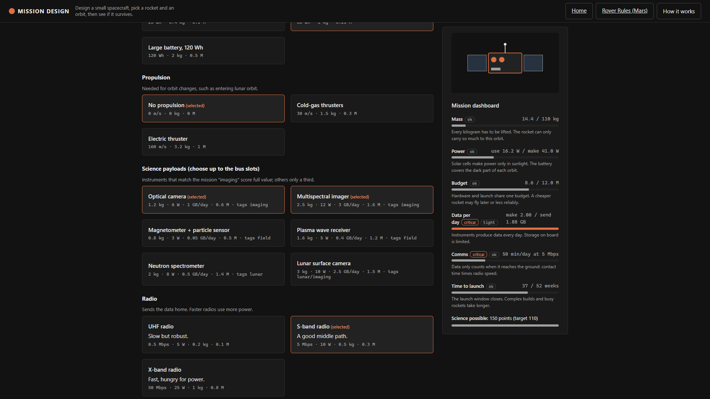
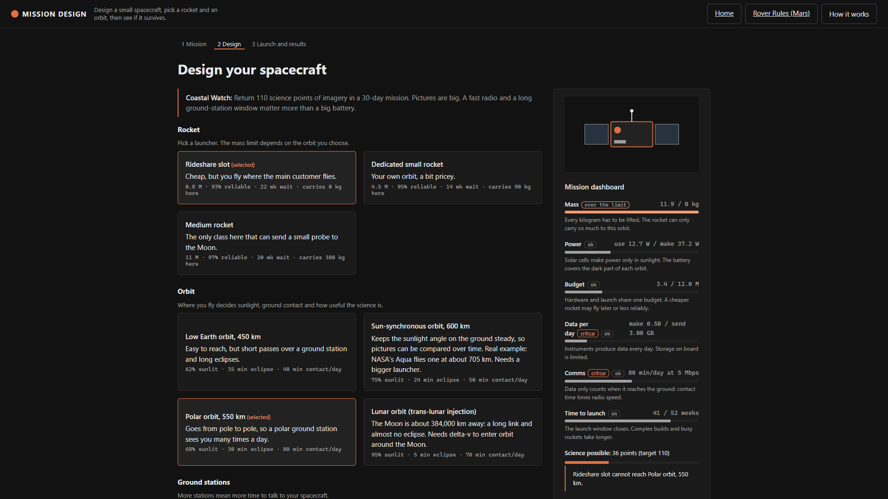
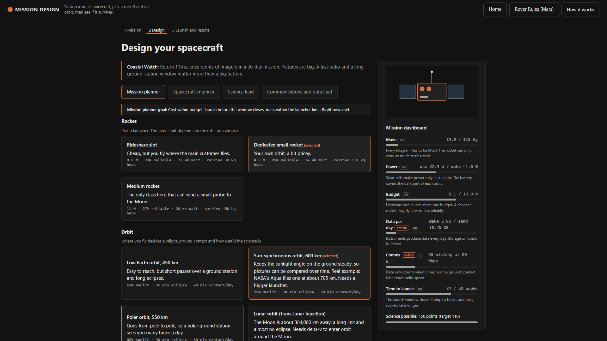
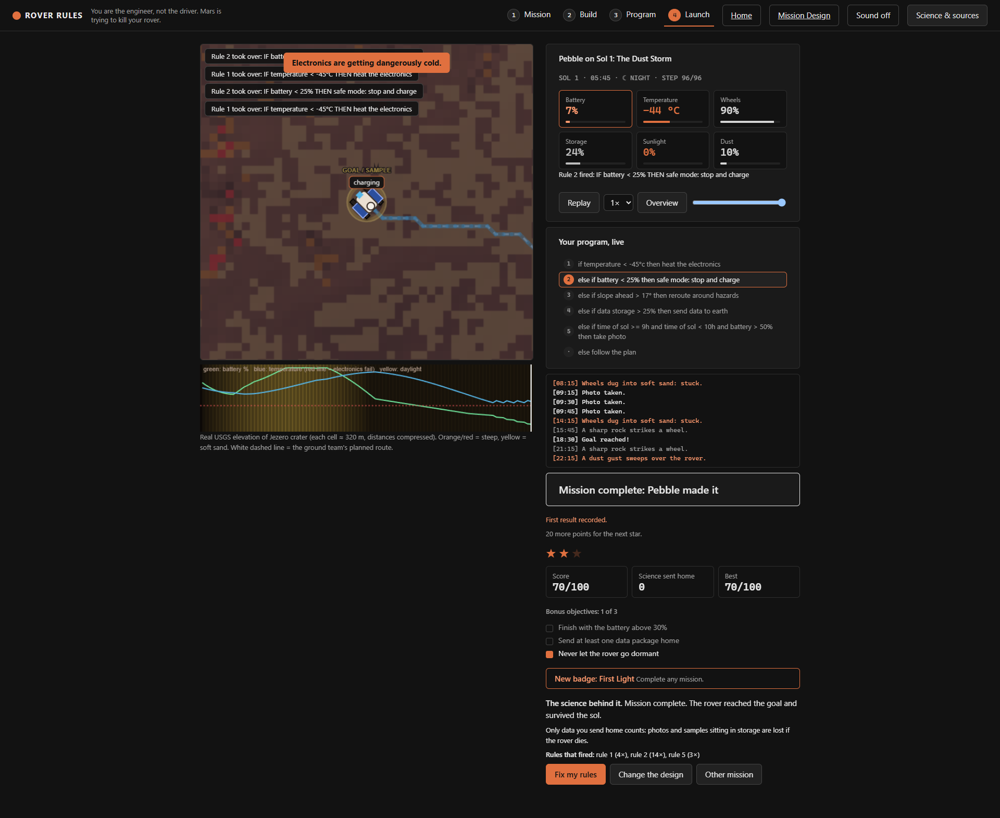

Team: [TEAM NAME] · Members: [MEMBER NAMES]
NASA Space Apps Challenge 2026 · Challenge: Space Mission Design Game
Not affiliated with or endorsed by NASA.




Play: [PUBLIC URL]
Made with AI assistance; see the AI disclosure in our submission.